Capítulo 30
Las "áreas ("tjumim") del Shabat"
1) Reglas generales del precepto del "área sabática" ("mitzvat tjumín")
La necesidad de viajar de sitio en sitio y andar por los caminos se deriva del sentimiento de carencia del ser humano, el cual ni obtiene su sustento ni puede satisfacer sus menesteres allí donde habita, por lo que se ve en la necesidad de salir de su área de residencia. Empero, el Shabat está destinado a que los judíos descansen tanto de los esfuerzos como de las preocupaciones pudiendo así contemplar la completitud interior de la creación, agradecer a D´s por habernos escogido entre todas las naciones, habernos entregado Su Torá y deleitarnos en el bien Divino.
Por ello, nuestros sabios establecieron un área o perímetro en el cual está permitido desplazarse en Shabat y allende del cual está prohibido salir. El área de Shabat es el sitio de residencia de la persona más el agregado de dos mil codos en cada sentido. Dos mil codos equivalen a dos mil pasos de una persona promedio y en metros a unos 912.
Si una persona pasa el Shabat en el campo, su sitio de residencia equivale a cuatro codos por cuatro codos que es el espacio necesario para acostarse sobre el suelo y extender los brazos y las piernas. A partir de este espacio, está permitido caminar dos mil codos en cada dirección. Si la persona en cuestión pasa el Shabat en la ciudad o en un poblado, toda el área habitada se considera un mismo espacio y se miden los dos mil codos fuera de éste (ver halajá 8).
Según las opiniones de Rambám y Sefer Mitzvot Gadol, la prohibición de salir del área de Shabat tiene su origen en la Torá; sin embargo esta prohibición indica que la persona no se ha de alejar de su área más de doce "mil" (24.000 codos) lo cual equivale a unos once kilómetros (10944 m.). Esta cifra equivale a lo que era la superficie que ocupaba el campamento de los hijos de Israel en el desierto, tal como está escrito (Shemot 16:29): "Permanezca entonces cada cual en su lugar en el séptimo día". En opinión de Rambán, Rosh, Rashbá y la mayoría de los sabios medievales este versículo se refiere al traslado de objetos en el dominio público, pero la prohibición de salir del "área sabática" más allá de los doce "mil" es una prohibición rabínica.
Los sabios establecieron que quien precise salir de su "área sabática" para participar de un banquete nupcial ("seudat jatán") o escuchar una clase, que prepare un "Eruv Tjumín" y de ese modo transfiera su área de residencia en Shabat al sitio requerido (como se explicará en las halajot 12-14). Quien sale del "área sabática" ("tjum Shabat") perdió su sitio de pernocte y no tienen más que los cuatro codos por cuatro codos dentro de los cuales puede caminar (como se verá en la halajá 11).
2) La cuadratura del "área de pernocte" ("ribúa hatjum").
Nuestros sabios establecieron que el sitio donde una persona pasa el Shabat es cuadrado, por lo que el "área sabática" también lo es. Si una persona pasa el Shabat en el campo y su sitio es de dos codos por dos codos, su "área sabática" no será un círculo con radio de cuatro codos sino que será un cuadrado de cuatro codos por cuatro codos de modo tal que gana también los vértices. Si la persona pasa el Shabat en la ciudad o en un poblado, aunque la forma de estos sea circular, se introducen los perímetros dentro de un cuadrado o rectángulo de modo tal que se ganan también los vértices (Mishná Eruvín 53(A)).
 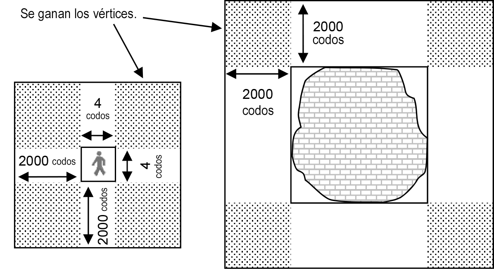
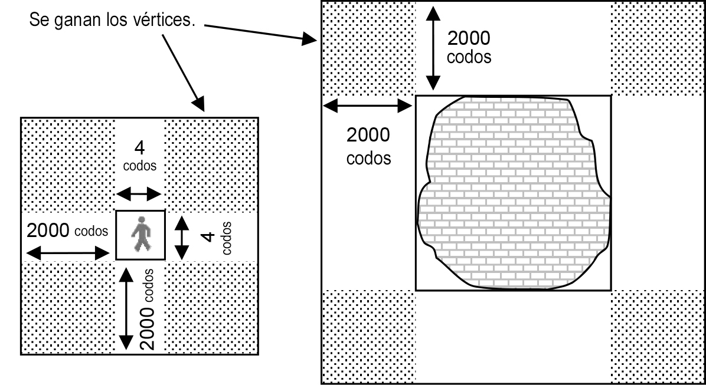
(dibujo)
Posteriormente, se miden dos mil codos en las cuatro direcciones geográficas y nuevamente se traza un cuadrado o rectángulo que es el "tjum Shabat" o "área sabática", y de esa manera resulta que nuevamente se gana el área de los vértices.
(dibujo)
La halajá en virtud de la cual se confiere forma cuadrada a la ciudad la aprendemos del área que se les entregó a los levitas en las afueras de sus ciudades, tal como está escrito (Bamidbar 35:5): " Y habréis de mensurar, en las afueras de la ciudad, por el lado este dos mil codos; y por el lado sur dos mil codos; y por el lado oeste dos mil codos; y por el lado norte dos mil codos; y la ciudad en el centro. Estos serán para ellos los ejidos de las ciudades ."
La razón básica por la cual se da forma cuadrada al "área sabática" es la dificultad que conlleva trazar un área circular pues sería necesario medir dos mil codos en casi cada punto del trazado. Por el contrario, si se desea trazar un área cuadrada se debe llevar a cabo cuatro mediciones en las cuatro direcciones geográficas para luego trazar una línea recta en cada una de ellas y el resultante será el "área sabática".
Existe además una razón de índole espiritual, pues el hombre y su vida se mueven circularmente, sus órganos poseen forma circular, y así también se le presentan sus pensamientos y deseos. El círculo insinúa el infinito que carece de comienzo y de fin por lo que al ser humano se le dificulta realizar sus aspiraciones. La solución a esto pasa por introducir las ideas circulares e infinitas en esquemas o marcos cuadrados, los cuales ayudarán a la persona a realizarlas. De eso se trata el "área sabática", que está destinada a otorgar un receptáculo para la santidad y la bendición del Shabat. Por esta razón, las ciudades de los levitas destinadas a la revelación de la fe en el mundo están rodeadas de un área cuadrada.
3) Un "área sabática" específica para cada persona
El "área sabática" es específica para cada persona dependiendo del sitio donde pasa el Shabat. Si dos personas viven en el campo en dos casas que distan mil codos una de la otra, cada quien tiene un "área sabática" diferente, una parte de estas coincidirán y la otra no.
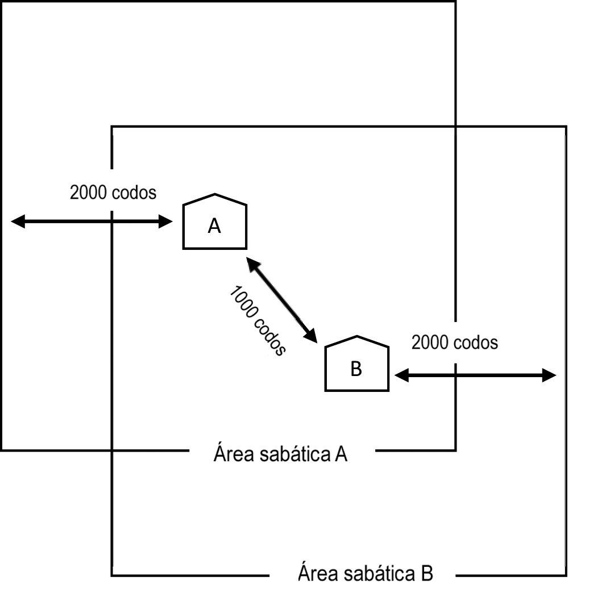Las reglas del "área sabática" recaen también sobre las bestias y los objetos propiedad de la persona, se trate tanto de un judío como de un gentil. Por lo tanto, si una persona caminó con su talit hasta el extremo del área sabática, y su compañero poseedor de un "área sabática" diferente desea pedírselo prestado, no podrá caminar con el mismo allende el "área sabática" del dueño del manto de oración (Shulján Aruj 397:3).
Si dos personas comparten un talit, podrán caminar con él únicamente en el "área sabática" común a los dos (Shulján Aruj 393:9).
Dibujo
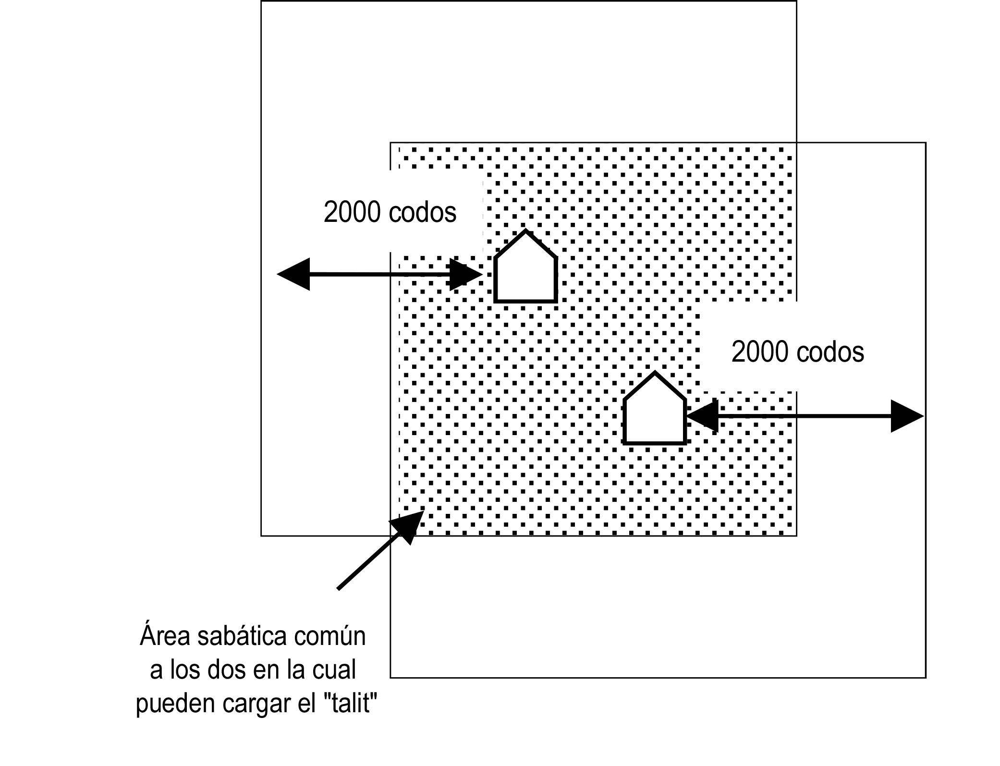4) Quien pasa Shabat dentro de la ciudad y quien lo hace fuera de esta.
Para quien pasa Shabat en una ciudad o poblado en los cuales habitan o no judíos, todo el sector densamente poblado es considerado como un mismo sitio y se miden los dos mil codos desde el final de este hacia afuera. Aunque haya en el sector habitado una distancia o espacio vacío entre las casas y si están todas rodeadas por una cerca o "Eruv", se considera como un mismo sector a toda la superficie comprendida por estas y a partir de ellas se miden los dos mil codos (como se verá en la halajá 8).

Empero, esto aplica únicamente para quien pasa el Shabat dentro de la ciudad o dentro del cuadrado trazado a partir de esta. Empero, quien pasa el Shabat en el campo aledaño a la ciudad posee dos mil codos en cada dirección y si estos concluyen en medio de la ciudad, su área llega allí a su fin y no se considera a toda la ciudad como su espacio inmediato (cuatro codos)
Dibujo
Dibujo

5) Las técnicas de medición en los tiempos de nuestros sabios, de bendita memoria, y en la actualidad.
Nuestros sabios establecieron reglas respecto de cómo medir el "área sabática" de modo tal que se acerque lo más posible a un resultado exacto. Ellos dijeron (Talmud Babilonio Tratado de Eruvín 57(B)): "No se mide sino con una cuerda de cincuenta codos, ni más ni menos". Y lo explican diciendo que si la medición se lleva a cabo con una cuerda más larga será difícil tensarla en virtud de su peso excesivo lo cual acortaría la medida final. Si se mide con una cuerda más corta, se teme que si se la tensa demasiado lo cual puede estirarla incrementando así el resultado artificialmente. Además nos enseñaron que se debe sostener la cuerda de medición a la altura del corazón, pues si uno la sostiene a la altura de su cabeza y el otro a la altura de sus pies - la medida final resultará artificialmente más corta (Shulján Aruj 399:1-3). Asimismo, nuestros sabios nos enseñaron que si se llega a un valle, los dos medidores habrán de pararse a la misma altura a ambos lados del mismo y medir la distancia aérea. De haber en el lugar una colina, se habrán de erigir dos mástiles a ambos lados de la misma y se habrá de efectuar la medición por encima de esta. Si no se pueden medir la colina o el valle mediante una sola cuerda de cincuenta codos en virtud de su extensión, se habrán de emplear cuerdas menores de cuatro codos de longitud cada una, de modo tal que quien esté parado arriba sostenga la cuerda a la altura de sus pies y quien lo haga desde abajo, que la sostenga a la altura de su corazón. En caso de que la pendiente sea aún más empinada al punto de que resulte difícil medir de esta manera, se ha de efectuar una medición estimativa. De haber allí un peñasco con un ancho inferior a los cuatro codos - no se lo tomar en cuenta (Talmud Babilonio Tratado de Eruvín 58(A y B), Shulján Aruj 399:4-5).
Nuestros sabios dijeron que en esta cuestión sólo se confía en la medición de un experto, o sea, alguien que sabe tomar las medidas. Si dos expertos obtuvieron resultados diferentes se opta por el resultado más amplio, ya que las reglas referentes a las "áreas sabáticas" ("tjumín") son de origen rabínico y en caso de debate la halajá final es conforme a la opinión más flexible (Talmud Babilonio Tratado de Eruvín 58(B), 59(A), Shulján Aruj 399:7-8). Cuando una persona llega a un sitio en el cual no fueron tomadas mediciones del "área sabática" y precisa caminar a los efectos de cumplir con un precepto, que camine dos mil pasos medianos que equivalen aproximadamente a dos mil codos (ídem Eruvín 42(A), Shulján Aruj 399:2, Mishná Berurá 5).
Hoy día es preferible establecer el "área sabática" mediante mapas basados en fotografías aéreas o mediante instrumentos respaldados por satélite, los cuales permiten establecer las distancias con suma exactitud. No cabe argüir que se debe medir conforme lo indicaron nuestros sabios, ya que toda su intención fue obtener la medición más exacta posible sobre la base del instrumental disponible en su época y sin agobiar a los medidores en exceso. Hoy día que disponemos de técnicas de medición más exactas y confortables, debemos hacer uso de estas.
6) La cuadratura conforme a las direcciones cardinales y la cuadratura particular de una ciudad.
Tal como aprendimos en la halajá 2, si la persona está en el campo se traza un cuadrado de cuatro codos por cuatro codos en torno al sitio donde ha de pasar el Shabat, y si habrá de hacerlo en la ciudad se introduce el perímetro de esta en un cuadrado y a partir de este se miden dos mil codos en cada dirección.
Cabe agregar que cuando se introduce el perímetro de un poblado en un cuadrado, se lo hace según los puntos cardinales (Shulján Aruj 398:3). En caso de haberse trazado un cuadrado que no es conforme a ellos se le deberá trazar de acuerdo a esa orientación (Shulján Aruj 398:1).
Ejemplos de cuadratura conforme a los puntos cardinales ("ribúa haolám"):
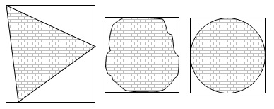Ejemplos consensuados de cuadraturas consensuadas que no siguen los puntos cardinales:
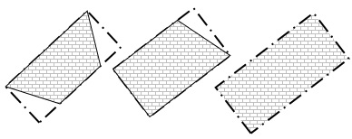Cuando un poblado o localidad tiene una inclinación diferente a la cuadratura según los puntos cardinales, los juristas debatieron cómo se debe cuadrar. Hay juristas que consideran que solamente cuando se impone no seguir la cuadratura conforme a ellos, se puede cuadrar conforme a la forma de la localidad (Shulján Aruj HaRav 398:3, Jaiei Adám 76:14). Y para la mayoría de los juristas, se considera que si el poblado posee una inclinación marcada hacia una dirección específica se ha de cuadrar según ésta, a pesar de que no sigue las direcciones cardinales. En caso de duda, el Rabinato local debe definir.

Veamos ahora unos ejemplos de situaciones intermedias en los que se ve una tendencia o inclinación clara, diferentes a la cuadratura conforme las direcciones cardinales. Esto puede ocurrir en virtud de que una línea recta atraviesa la ciudad a lo largo (dibujo 1), o si la ciudad posee un ángulo recto (dibujo 2) en esos casos se sigue el ángulo recto y no se cuadra conforme a los puntos cardinales ("ribúa haolam").
Dibujos
Es imprescindible saber que quien pasa el Shabat en el campo y su sitio para pernoctar es un cuadrado de dos codos por dos codos, puede establecer la dirección de la cuadratura a su gusto, y de acuerdo a cómo lo haya trazado habrá de establecer las direcciones u orientaciones de la cuadratura de su "área sabática" (ver adelante halajá 12).
7) ¿Cuándo se cuadra?
Tal como ya aprendimos, se suele cuadrar la ciudad y de ese modo se ganan los vértices. Sin embargo, nuestros sabios nos dijeron que en ciertos casos no se puede trazar una línea recta que cuadre toda la ciudad por haber enclaves o espacios muy grandes no habitados, como en el caso de una ciudad que tiene la forma de un arco o de ángulo recto (como la forma de la letra griega gama Γ). La regla a seguir es que cuando un enclave tiene cuatro mil codos entre lado y lado, entonces no se los debe cuadrar.
Enclave con forma de ángulo recto:
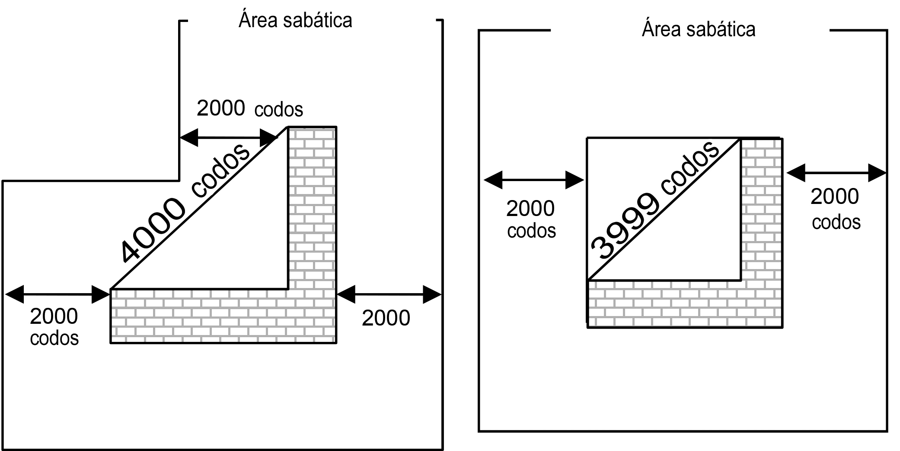Enclave urbano con forma de arco:
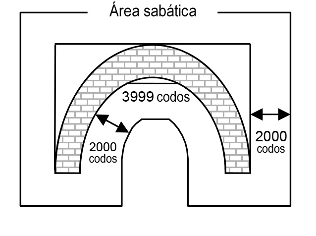8) Conurbaciones: la comunicación entre centros urbanos
Si las casas de una ciudad se encuentran dispuestas de un modo tal que no media entre estas una distancia mayor a un "karpef", que equivale al tamaño de un patio grande o sea aproximadamente unos treinta y dos metros, se las considera como continuas. Si media entre estas un espacio mayor al antedicho, las casas no se unen entre sí y cada cual posee un "área sabática" propia.
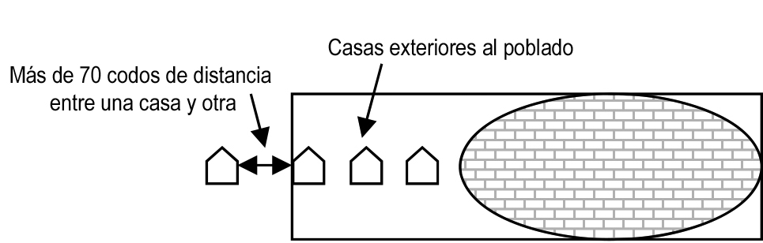Si las casas están dispuestas de modo continuo y una casa sobresale de la fila, mientras no lo haga más de treinta y dos metros de la casa más cercana esta casa amplía el área del cuadrado. Asimismo, si detrás de la casa en cuestión hay otra y otra más y así sucesivamente, aunque se encuentren a una distancia que lleva días caminarla, mientras que las casas no guarden entre sí una distancia mayor a los treinta y dos metros, se extiende el cuadrado a los efectos de incluirlas. Empero, si una casa se encuentra a una distancia mayor de treinta y dos metros no se la incluye en el cuadrado.
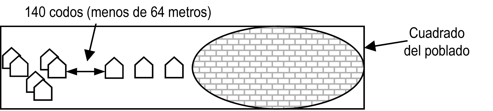Si hay dos barrios contiguos y la distancia entre ambos es mayor a dos patios, o sea, más de sesenta y cuatro metros, cada cual es considerado una localidad separada, se cuadra por separado y se miden dos mil codos en cada dirección desde el límite de este cuadrado. Si la distancia entre ambos barrios equivale a dos patios, unos sesenta y cuatro metros, se los considera un solo sitio y se los cuadra conjuntamente. A los efectos de que un grupo de casas sea considerado como barrio se precisa que esté habitado por, al menos, cincuenta residentes (Talmud Babilonio Tratado de Eruvín 60(A), si no hay allí cincuenta pero hay tres patios de dos casas cada uno o incluso seis casas con un patio cada una se lo considera un barrio, Mishná Berurá 398:38, Jazón Ish Oraj Jaím 110:19).

Dibujo
Si el sitio está rodeado por una muralla o un "Eruv", todas las casas y barrios que se encuentran en el interior son considerados un mismo sitio aunque estos se encuentren a una distancia superior a un "karpef" de las últimas casas o aunque hayan distancias importantes entre las casas y los barrios.
Dibujo
9) La inclusión de cuadrados.
Cuando el cuadrado de un poblado ingresa en el área del cuadrado de otro, aunque no haya allí un "Eruv" que los una, dado que entran uno en el otro los dos poblados se unen y se debe trazar un nuevo cuadrado que incluya a ambos. Los habitantes de cada uno de los dos poblados podrán caminar dos mil codos allende el límite del nuevo cuadrado común.

Dibujo
Si entre los vértices de los dos cuadrados hay una distancia superior a los cuatro mil codos, no se cuadra todo sino que se extiende cada vértice dos mil codos en cada dirección, tal como ya aprendimos en la halajá 7.

Dibujo
10) El caso de las grandes ciudades
Cuando dentro de una ciudad hay una avenida o rutas cuyo ancho es superior a los sesenta y cuatro metros, si la atraviesan en su totalidad y la ciudad queda separada en dos mitades - se debe calcular el "área sabática" de cada parte por separado. Lo mismo ocurre con espacios abiertos, por ejemplo, jardines o parques cuyo ancho es superior a los sesenta y cuatro metros y atraviesan toda la ciudad separándola en dos partes.

Dibujo
Según esto, la autopista de Ayalón divide a la ciudad de Tel Aviv en dos partes. Sin embargo, como hay un "Eruv" que bordea a esta ciudad junto con las vecinas, este "Eruv" las une a todas. Además, cuando hay una avenida o autopista ancha que atraviesa la ciudad, si los cuadrados de ambas partes se unen, se transforman en una misma área y forman un cuadrado común tal como se explicó anteriormente. Debe agregarse que es posible decir que por cuanto que los caminos o autopistas en cuestión están destinados al uso de todos los habitantes de la ciudad al igual que los espacios abiertos en el interior de la misma, son parte de la ciudad y no la dividen.

Dibujo
Hay juristas que disienten y entienden que ni el "Eruv" común, ni la unificación de cuadrados ni el uso común de todos los habitantes unen los dos lados de un camino o parque que atraviesan toda la ciudad. La opinión principal es la de los juristas de criterio más flexible. Sin embargo, corresponde adoptar una actitud estricta e indicar a quien cruza una avenida o camino ancho que no se aleje del mismo más de doce "mil", pues hay quienes consideran que la prohibición de alejarse allende esta distancia tiene origen en la Torá (ver arriba halajá 1).
11) Quien sale del "área sabática" ("tjum Shabat") y objetos que arriban desde el exterior de la misma.
Quien sale del "área sabática", tanto sea por descuido o desconocimiento ("shogueg") como a sabiendas o voluntariamente ("mezid") perdió la posibilidad de generar un área y dispone únicamente de cuatro codos ( Shulján Aruj 405:1). Si precisa evacuar, se le permite caminar hasta un sitio donde pueda hacerlo discretamente y luego podrá alejarse del mismo lo suficiente como para no percibir más malos olores, de modo tal que pueda recitar cuestiones referentes a la santidad. De allí no habrá de alejarse más que cuatro codos (ídem 406:1).
Si la persona en cuestión sale de su "área sabática" y llega a un sitio rodeado por tabiques o por un "Eruv", en caso de haber salido a sabiendas o voluntariamente no dispone sino de cuatro codos. Si salió por descuido o desconocimiento puede andar por toda la zona rodeada (ídem 405:6, Beur Halajá 'אבל').
Empero, quien sale de su "área sabática" a los efectos de salvar una vida, una vez que concluya la labor de rescate, desde donde se encuentre, los sabios dispusieron que dispone de dos mil codos en cada dirección. Si su nueva área coincide con la anterior, puede retornar a su lugar y dispone del área anterior como si nunca hubiese salido (Talmud Babilonio Tratado de Eruvín 44(B), a veces los sabios flexibilizaron la norma permitiéndole al rescatista volver su lugar, tal como se explicó arriba 27:10).
En el caso de quien sufrió un contratiempo y aterrizó en un aeropuerto después de iniciado el Shabat, su "área sabática" se establece al momento de descender y no puede alejarse de allí más de dos mil codos en cada dirección. Dado que por lo general los aeropuertos están cercados por una valla y poseen sitios destinados para alojarse, se lo considera en su totalidad como un área de cuatro codos por lo que está permitido alejarse del aeropuerto dos mil codos en cada dirección. Cuando el aeropuerto no está rodeado de una cerca, el sitio de la persona se fija a partir del punto de contacto de las ruedas del tren de aterrizaje con el suelo. Si el avión continúa carreteando sobre la pista dos mil codos la persona habrá salido de su "área sabática", no podrá caminar más de cuatro codos y deberá permanecer en la aeronave hasta concluir el Shabat. Si se le exige salir de esta o si precisa hacerlo para ir al baño, podrá dejar la aeronave. Si llega a un sitio rodeado por tabiques podrá andar por toda esa área ya que salió de su "área sabática" por causas de fuerza mayor ( Shulján Aruj 405:6). Si su viaje tenía como propósito el cumplimiento de un precepto, aunque el avión viajó a lo largo de la pista un kilómetro completo y esa área no está rodeada por una cerca o valla, podrá caminar dos mil metros desde la puerta del avión ( Shulján Aruj 248:4, Mishná Berurá 32).
Quien arriba a un puerto marítimo en Shabat, podrá descender de la nave y caminar dos mil codos en cualquier dirección, pues hasta su arribo la persona se encontraba diez palmos por encima del fondo del mar y no se aplican sobre él las reglas del "área sabática". Solamente una vez que desciende a tierra se fija su sitio. Si el puerto está rodeado por una cerca, se podrá medir dos mil codos allende esta (Shulján Aruj 404:1).
En el caso de quien salió de su "área sabática" y por descuido o desconocimiento ("shogueg") o fuerza mayor retornó a esta, puede andar libremente dentro de ella (ídem 406:1). Si salió del área adrede o a sabiendas ("mezid"), aunque haya retornado por descuido o desconocimiento, perdió su área, empero puede caminar por toda su ciudad (ídem 406:8).
Así como se prohíbe a una persona abandonar su área sabática en Shabat, también tiene prohibido sacar sus objetos o enseres de la misma. Si por error se sacaron frutas de su "área sabática", a pesar de que está prohibido cargarlas allende ésta más de cuatro codos, se podrán comer. Si se las sacó adrede o a sabiendas no se podrán comer (Shulján Aruj 405:9, Mishná Berurá 52).
Si un gentil trajo frutas de fuera del "área sabática" y lo hizo para sí o para otro gentil - cualquier judío puede comer de ellas pero no las podrá cargar más allá de cuatro codos. Si el gentil trajo las frutas a una casa o a un área cercada por una valla o un "Eruv", un judío puede cargarlas en toda el área rodeada. Si el gentil trajo las frutas para un judío, estas estarán prohibidas para él y todos los miembros de su hogar el tiempo que le demandaría a ese gentil traerlas hasta la casa del judío a la salida del Shabat (Shulján Aruj 325:8).
12) "Eruv Tjumín" o "fusión de áreas"
Quien desea ir en Shabat a un sitio ubicado fuera de su "área sabática" puede hacerlo mediante un "Eruv Tjumín" o "fusión de áreas", esto es, fijando su sitio de pernocte en el límite de su "área sabática". De esa forma, fusiona el área que le estaba vedado caminar con aquella que tenía permitido hacerlo, por lo que esta acción se denomina "fusión de áreas". Sin embargo, todo lo que gana de un lado lo pierde del otro; si colocó el "Eruv" a dos mil codos en dirección Este, podrá caminar desde su casa cuatro mil codos en esa dirección pero no podrá caminar ni un codo en dirección Oeste.
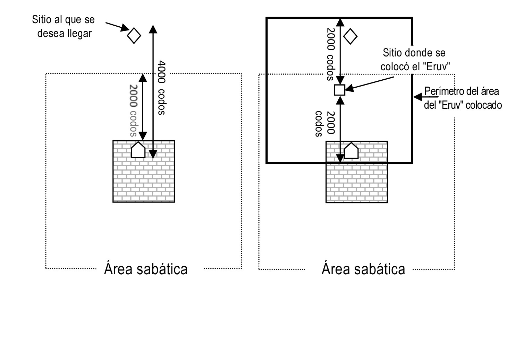Dibujo
El "Eruv" se establece de una de dos maneras: la primera es permaneciendo en el límite de este desde el inicio del Shabat y dado que la persona estuvo allí entre la puesta del sol y la salida de las estrellas del viernes ("Bein Hashmashot") se lo considera su sitio de pernocte y desde allí se mide el "área sabática". Quien realiza esto no necesita declarar o recitar nada y alcanza con que tenga la intención de que allí sea su lugar de pernocte; empero, quien se encontraba paseando por el campo entre la puesta del sol y la salida de las estrellas del viernes sin tener la intención de establecer allí su sitio de pernocte, su lugar de reposo continúa siendo su casa (Shulján Aruj 409:7, Mishná Berurá 29).
La segunda manera de fijar el "Eruv" es colocando alimento suficiente para dos comidas en el sitio en cuestión, recitar la fórmula del "Eruv" y una bendición, tal como se explicará en la próxima halajá. Un "Eruv Tjumín" o "fusión de áreas" mediante comida no se establece a menos que sea a los efectos de cumplir con un precepto, por ejemplo, asistir a una disertación de Torá o participar de una alegría preceptiva ("simjá shel mitzvá"). Si se colocó el "Eruv" con otro propósito, igualmente, a posteriori, este será válido (Shulján Aruj 415:1).
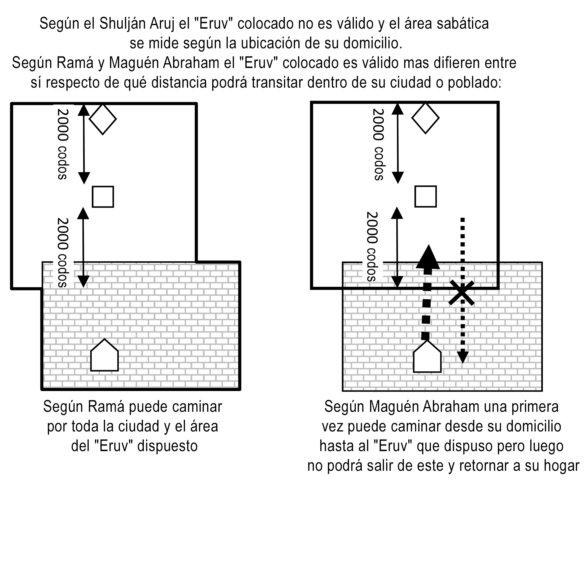Quien desea establecer un "Eruv" debe colocarlo a una distancia máxima de dos mil codos de su casa, de modo que esta esté dentro del "área sabática" y pueda caminar desde su casa hasta el "Eruv". Empero, si la casa se encuentra fuera del "área sabática" del "Eruv", este queda sin efecto y - el "tjum Shabat" - se debe medir desde su casa.
El "Eruv Tjumín" o fusión de áreas permite a la persona no sólo ganar cuatro mil codos sino incluso cinco mil o seis mil. Esto obedece a que como su pernocte en el sitio de colocación de "Eruv" es temporario (a diferencia de lo que ocurre en una ciudad, ver arriba halajá 6), puede establecer que la cuadratura del sitio del "Eruv" sea en diagonal en la dirección al sitio deseado de modo tal que gane los vértices.

Dibujos
13) El establecimiento de un "Eruv Tjumín" y la bendición a recitar
Quien desea establecer un "Eruv Tjumín" mediante alimento, debe colocar una cantidad suficiente para dos comidas antes de la puesta del sol. Si se trata de pan, debe tener un volumen mínimo equivalente al de ocho huevos que son unos 400 cc (hay quien opina que seis huevos). Si se quiere colocar un alimento que se suele comer con pan (por ejemplo ensaladas, carne etc. n. de t.) alcanza con un volumen equivalente a ocho huevos ( Shulján Aruj 409:7). Si se quiere establecer un "Eruv Tjumín" para que sea usufructuado por varias personas, se debe colocar alimento suficiente para dos comidas de cada una de ellas. Cuando se trata de muchas personas y se quiere economizar en las cantidades del "Eruv", se puede colocar aceite de oliva o dulce de chocolate los cuales en cantidades relativamente pequeñas sirven para untar mucho pan. Asimismo, se puede colocar un "reviit" (75 ml) de vinagre que es suficiente para condimentar dos comidas conformadas por verduras (Mishná Berurá 386:35, 409:36). El "Eruv" se puede establecer también colocando bebida en una cantidad equivalente a 150 ml por persona (Shulján Aruj 386:6) que equivale a dos medidas de "reviit". No se puede establecer un "Eruv" colocando agua o sal (Talmud Babilonio Tratado de Eruvín 26(A)).
El alimento debe pertenecer a quien usufructúa el "Eruv" pues por su intermedio establece allí su sitio de pernocte sabático. Cuando se establece un "Eruv" para varias personas, el propietario del alimento debe hacerlos socios del mismo. Esto se realiza alzando la comida y poniendo la intención de hacer a los demás presentes que necesitan el "Eruv" partícipes de la misma (Shulján Aruj 413:1).
Si la comida que se colocó a los efectos de establecer un "Eruv" fue ingerida antes de la puesta del sol del día viernes este queda sin efecto. Pero después de la puesta del sol se puede ingerir, pues al establecer el sitio de pernocte entre la puesta del sol y la salida de las estrellas la fijación sigue en pie por todo el Shabat (Ramá 394:2). Si se colocó el alimento del "Eruv" en un sitio en el cual tomarlo entre la puesta del sol y la salida de las estrellas está vedado por una prohibición de la Torá, por ejemplo, que debe desalojar piedras para sacar el "Eruv" - este quedará sin efecto (Shulján Aruj 394:3, 409:3-4).
Al establecer el "Eruv" se debe recitar la siguiente bendición: "Baruj Atá Ad-onai Eloh-einu Melej Haolám Asher Kidshanu Bemitzvotav Vetzivanu al Mitzvat Eruv". Y luego habrá de declarar: "Bezé HaEruv Ihié Mutar Li Leilej Mimakom Zé Alpaim Amá lejol Ruaj" ("Mediante este Eruv podré ir dos mil codos en cualquier dirección"). A posteriori, alcanza si dice: "Zé Ihié HaEruv" ("Este será el Eruv"). Empero, si no se dice nada, el "Eruv" no quedó establecido (Shulján Aruj 415:4, Mishná Berurá 15).
Cuando el "Eruv" está destinado al uso de varias personas se debe declarar verbalmente quiénes son los beneficiarios. Se debe tener cuidado de que haya la cantidad necesaria de alimentos para dos comidas de todos los destinatarios (Shulján Aruj 415:4). Si se desea que el "Eruv" sea efectivo para más de un Shabat se debe declarar: "Lejol Shabatot Hashaná" ("para todos los sábados del año"), y mientras existe mantiene su validez ( Mishná Berurá 16).
Se puede establecer un "Eruv" mediante un enviado o un representante ("sheliaj"), pero este no puede ser ni un niño, ni un gentil ni alguien que no crea en la validez del precepto en cuestión. El enviado debe recitar la bendición y la declaración, si no lo hizo el "Eruv" no quedó constituido ( Shulján Aruj 409:8). Si el destinatario original del "Eruv" ("Baal HaEruv") declara: "Bezé HaEruv Shemeniaj Shlují Ehié Mutar lehalej Mimekom HaEruv Alpaim Amá Lejol Ruaj" ("Mediante este "Eruv" que coloca mi delegado podré caminar desde éste dos mil codos en cualquier dirección") el "Eruv" queda constituido (Beur Halajá 'ויאמר').
Una persona no puede colocar un "Eruv" para su compañero sin su conocimiento. Una persona puede colocar un "Eruv" para los niños que integran su familia y este habrá de recaer sobre ellos. Una persona puede colocar un "Eruv" para los miembros de su familia que ya llegaron a la edad de cumplimiento de los preceptos, pero si al escuchar estos sobre la existencia del mismo protestan y declaran que no lo desean, la presencia de este no recaerá sobre ellos. Un niño menor de seis años es considerado adjunto a su madre por lo que si el "Eruv" es válido para ella lo será también para él (Shulján Aruj 414:1-2).
14) El establecimiento de un "Eruv" condicional para todos los habitantes de una localidad
Se permite colocar un "Eruv" en forma condicional. Por ejemplo, quien sabe que en Shabat habrán de llegar dos sabios a disertar en dos poblados de una misma región y todavía no decidió a cuál conferencia desea asistir, si al poblado que se encuentra al oriente o al que se encuentra al occidente del suyo o si preferirá quedarse en su casa, habrá de colocar un "Eruv" en el lado oriental y otro en el occidental y habrá de condicionar para sus adentros que en Shabat decidirá cuál de las dos habrá de ser su "área sabática". Una vez que haya decidido cuál habrá de ser su área, no podrá salir de la misma. Si aún no decidió pero comenzó a caminar según un área determinada, el andar implica una decisión y establece el área y ya no podrá cambiarla por otra (Talmud Babilonio Tratado de Eruvín 82(A), Shulján Aruj 413:1, Mishná Berurá 8).
Una persona puede voluntarizarse y colocar un "Eruv" para los habitantes de un poblado, para lo que habrá de declarar: "Bezé HaEruv Ihié Mutar Lejol Bnei Hamakóm Veorjeihem Leilej Mimakom Zé Alpaim Amá Lejol Ruaj" ("Mediante este "Eruv" todos los habitantes de esta localidad y sus huéspedes podrán caminar desde éste dos mil codos en cualquier dirección"). Todo aquel que sabía de la existencia del "Eruv" antes del inicio del Shabat y aunque no decidió aún establecer su alojamiento en ese sitio, si decide luego que quiere caminar en esa dirección podrá acogerse a él. Empero, quien no sabía de la existencia del "Eruv" antes de iniciarse el Shabat no podrá acogerse a él (Shulján Aruj 413:1).
Si los habitantes de una localidad son numerosos y no pueden colocar alimento suficiente para dos comidas para cada uno de ellos, pero se sabe que al menos unas veinte personas querrán acogerse al "Eruv", se podrá colocar alimento suficiente para dos comidas de veinte personas y se habrá de declarar "Bezé HaEruv Ihié Mutar Lejol Mi Sheirtzé Leilej Mimakom Zé Alpaim Amá Lejol Ruaj Bemeshej Kol Shabatot Hashaná" (Mediante este "Eruv" todo aquel que así desee podrá caminar desde este sitio dos mil codos en cualquier dirección durante todos los sábados del año"). De esta manera, los interesados podrán acogerse al "Eruv" a condición de que sepan de su existencia en vísperas del Shabat (Shulján Aruj 413:1, Beur Halajá 'לכל אחד'). Consideramos que cuando es claro que alguien habrá de acogerse al "Eruv" colocado, se debe de recitar la bendición correspondiente por éste, pero en caso de duda no se habrá de recitar.
Sin embargo, quien colocó un "Eruv" sin establecer condiciones, su área de pernocte se establece según éste y no podrá establecer su área de acuerdo a la ubicación de su hogar.
***
Quiera HaShem que tengamos el mérito de recibir el Shabat con alegría, cuidarlo como corresponde de acuerdo a la halajá y santificarnos en este día con el recuerdo de la fe, dedicarnos en él al estudio de la Torá y deleitarnos con su descanso y sus comidas. Que el alma que anida en nosotros ilumine con su doble luz y que esta se irradie a los demás días de la semana. Que desde el área sabática se expanda la bendición a todas nuestras acciones y podamos acceder a la redención completa prontamente en nuestros días.